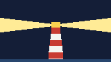

Flashing
Light is shorter than dark.
Fl
Test fixture · general history
Light, signal, and the end of the keeper
A short, non-client deck used to exercise Richie's HTML review path.
Agenda
Section 01
Range came from optics more than from fuel.
01 · Fuel
Sequence and dates are approximate and varied by country, from the early 1800s to the early 1900s.
01 · Optics
| Order | Focal length | Typical use |
|---|---|---|
| First | 920 mm | Major coastal lights |
| Third | 500 mm | Secondary coast and large bays |
| Sixth | 150 mm | Harbours and piers |
Augustin-Jean Fresnel's lens was first installed at Cordouan, France, in 1823.
Section 02
A light is useful only if a navigator can name it.
02 · Characteristics
Light is shorter than dark.
Fl
Light is longer than dark.
Oc
Light and dark are equal.
Iso
02 · Routine

Section 03
Electric lamps and remote monitoring ended the resident keeper.
03 · Statement
Trinity House withdrew its last resident keepers from North Foreland in 1998.
Trinity House, the lighthouse authority for England and Wales
Use the slide controls or arrow keys to navigate.